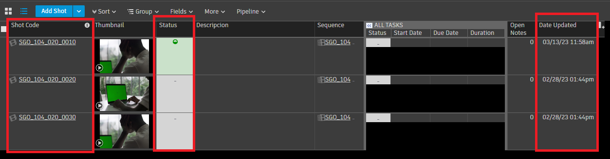
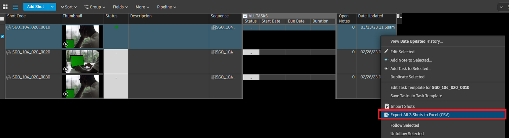
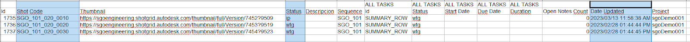
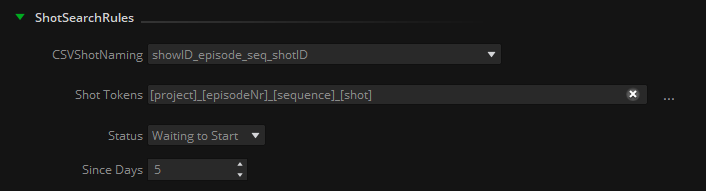
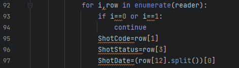
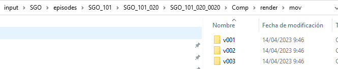

Purpose
The ShotGrid CSV Read node is intended to locate the last version of each shot in a typical VFX project folder structure at any storage location.
After a vfx reviewing session, it happens that notes have been added to shots reviewed, and also the statuses of those shots have been modified to ‘Complete’, ‘Final’, ‘Pending Review’ or any other agreed status. Then it is normally part of the job of the VFX Editor to gather all shots reviewed, transcode them and prepare the footage to a deliverable platform such as put them on an FTP server, upload them to FrameIO, or just copy them to another storage location.
ShotGrid CSV Read node takes as input a .csv file generated directly from Shotgrid.
To make it work it is mandatory to have at least three visible column fields: Shot Code, Status, and Date Updated:

Then is just a matter of right-click in the shotgrid site and select ‘Export all n shots to Excel (.csv)’:

The .csv file exported items in comma-separated should look something like this:

In the ShotGrid CSV Reader node properties we can then adjust the desired rules to search and filter the required Shots Code.

CSVShotNaming: used if a regular expression is required to match a certain Shot Code naming convention. For more information about this option please refer to the EDL to CC node documentation.
Shot Tokens: In the same way that dynamic tokens can be extracted from any file naming with the NC to metadata node, this field is used to declare the tokens to be extracted from the Shot Code found in the corresponding column of the .csv file.
Status: The status desired to use to filter the shots. In case the user has its own statuses and wants to add it to the list, this pulldown can be easily customized by editing the corresponding .xsd file.
Since Days: The n number of days backwards from the actual date to look for modified shots. If set to zero, it will look for all days backwards (hence ‘Date Updated’ field will be ignored).
Please note that, in order to calculate this bracket, the actual date of the host system is used, therefore having a wrong date in the computer can lead to unexpected behaviours of the node.
IMPORTANT NOTE: At the date of writing this manual, the python code of the node parses literally the index of the csv rows and columns needed. In the example provided rows 0 and 1 are ignored and the ‘Shot Code’, ‘Status’ and ‘Date Updated’ columns are located in the indexes 1, 3 and 12, respectively. This will be updated shortly to be non-literal but relative to the column name. In the meantime the user can modify these indexes directly in the python node code to fit its particular csv structure:

Once the Shot Search Rules have been determined, dynamic tokens extracted from the Shot Code can be used to look for the path of the shots in the storage location.
The FilePath field determines this target path:

In the example above the ShotGrid CSV Reader will find the last version of each shot in the Comp/render/mov/ files folder of the following folder structure, offering as output the files contained in the folder 'v003' only:

Inputs
SGcsv: csv file exported from Shotgrid to be processed.
Outputs
MaxVersion: Files found as the last version of the shots, according to the defined Shot Search Rules and the FilePath where look them for.
Standard properties
Object Name
Color
Bypass
Name Convention
Python standard properties
code
NOTE: An introduction to all the Python tools in Mistika Workflows is available in the Python scripting tools section.
Node specific properties
FilePath: Storage path where look for Max Version shots
ShotSearchRules
CSVShotNaming: regular expression used to match a naming structure in the Shot Code column field. Please refer to the EDL to CC node documentation to get more details about regEx used in VFX environments.
Shot Tokens: desired tokens to be extracted from the Shot Code naming structure.
Status: Filter by status of the shot in the .csv file.
Since Days: The n days backwards from actual date to look for modified shots. If set to zero, this field is ignored.